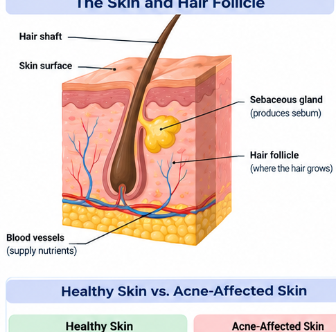
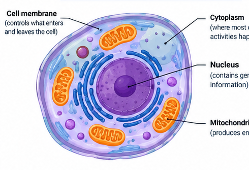
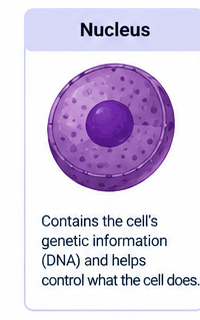
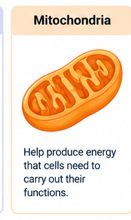
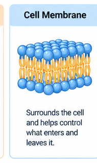
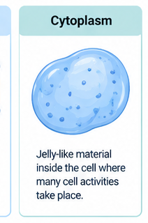
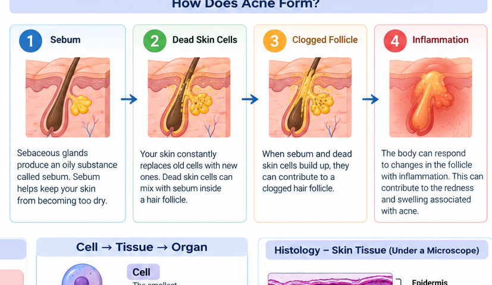
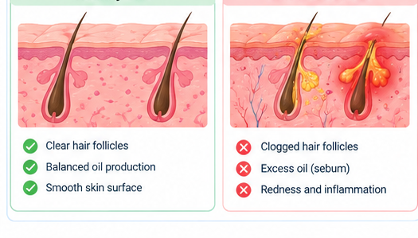
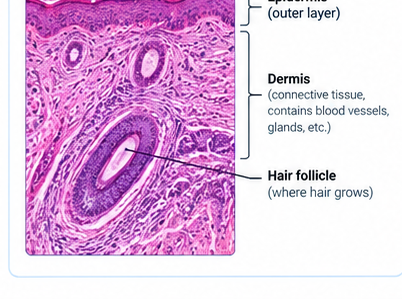

🔎 ACNE DETECTIVE Investigation for Elementary Students • Case 001
Your science mystery starts here
The Mystery Beneath Your Skin
A hair follicle has become clogged. Investigate the skin, explore its cells, and discover how acne can affect tissues.

CASE FILE 001 What is happening inside this follicle?
Investigation progress
0 of 5 missions completed
ROOKIE DETECTIVE
Mission 1 • 2 minutes
Open the case
A tiny structure in the skin becomes blocked. The area may become red and swollen. What could be happening?
Your detective goal: Find out how a change in a hair follicle can affect nearby skin tissue. You will need clues from cells, glands, and the body's response to irritation.
🧴
Clue A: Sebum
An oily substance made by sebaceous glands. It helps keep skin and hair from drying out.
🧫
Clue B: Skin cells
Skin cells are continually replaced. Dead skin cells can collect inside a hair follicle.
Detective question: Where does acne commonly begin?
Mission 2 • 3 minutes
Investigate the skin
Skin is an organ made of different tissues. A hair follicle is a small tube-like structure that extends down into the skin.
Illustration of a hair follicle and nearby skin structures. Choose a structure to investigate.
Tap a structure to inspect it
Choose one structure to reveal its clue.
Quick check: Which structure makes sebum?
Remember: Acne is not simply caused by being dirty. Several factors can contribute, including oil production, blocked follicles, bacteria that normally live on skin, hormones, and inflammation.
Mission 3 • 3 minutes
Enter the cell lab
All living tissues are made of cells. Cells have smaller parts called organelles, and each part has a job.

Important connection: Skin cells help form and maintain the skin's protective layers. Acne involves changes around the hair follicle and can trigger inflammation in nearby tissue. It does not mean every cell organelle is damaged.
Explore the cell parts

Nucleus
The nucleus stores genetic information (DNA) and helps direct cell activities.

Mitochondria
Mitochondria release usable energy from food so the cell can do its work.

Cell membrane
The cell membrane surrounds the cell and controls what enters and leaves.

Cytoplasm
Cytoplasm is the jelly-like material inside the cell where many activities happen.
Cell-part matching challenge
Choose a cell part, then choose its correct job. Match all four pairs.
Matched: 0 of 4
Mission 4 • 4 minutes
Follow the clues: How acne develops
Acne develops in the pilosebaceous unit: the hair follicle and its attached oil-producing sebaceous gland.

Clue 1Oil production and skin-cell changes can occur.
Clue 2Oil and dead skin cells collect.
Clue 3The follicle can become blocked.
Clue 4Inflammation may develop.
What is inflammation? It is part of the body's response to irritation or infection. In acne, inflammation can cause redness, swelling, and tenderness around an affected follicle.
Put the clues in order
Choose the order that best describes one common pathway. Real acne is complex, and not every spot follows exactly the same pattern.
First
Second
Third
Fourth
Healthy vs. acne-affected skin

Compare the follicle and surrounding tissue.
Skin tissue illustration

Look for layers and structures that make up the skin.
Mission 5 • 3 minutes
Final detective challenge
You have gathered the clues. Answer all five questions to close the case.
1. Which structure produces sebum?
2. What can contribute to blocking a hair follicle?
3. Which cell part controls what enters and leaves?
4. Which sequence shows biological organization?
5. What is inflammation?
🏅
Case closed, Detective!
You explored skin structures, learned about cells, and investigated how acne can affect a hair follicle and nearby tissue.